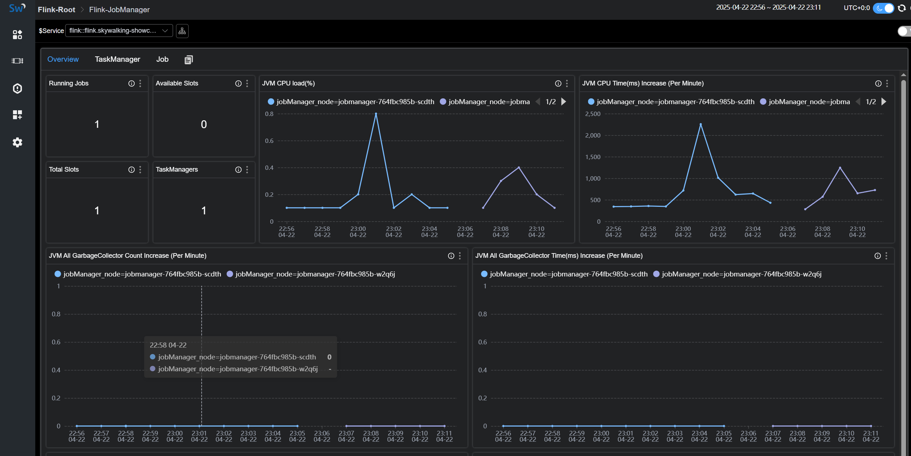
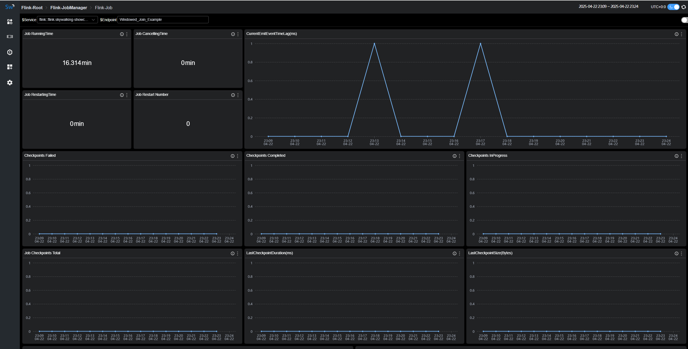

Monitoring Flink with SkyWalking
Background
Apache Flink is a framework and distributed processing engine for stateful computations over unbounded and bounded data streams. Flink has been designed to run in all common cluster environments, perform computations at in-memory speed and at any scale.
Apache SkyWalking is an application performance monitor tool for distributed systems, especially designed for microservices, cloud native and container-based (Kubernetes) architectures.
OpenTelemetry is a collection of APIs, SDKs, and tools. Use it to instrument, generate, collect, and export telemetry data (metrics, logs, and traces) to help you analyze your software’s performance and behavior.
Since SkyWalking 10.3, a new out-of-the-box feature has been introduced that enables Flink monitoring data to be visualized on the SkyWalking UI via the OpenTelemetry Collector, which gathers metrics from Flink endpoints.
Development
Preparation
Process
- Set up
SkyWalkingoap and UI. - Set up the
Flinkcluster By configuringjobmanagerandtaskmanagerto expose prometheus http endpoints. - Set up
OpenTelemetry-collector. - Run your job.
Data flow
Configuration
docker-compose
version: "3"
services:
oap:
extends:
file: ../../script/docker-compose/base-compose.yml
service: oap
ports:
- "12800:12800"
networks:
- e2e
banyandb:
extends:
file: ../../script/docker-compose/base-compose.yml
service: banyandb
ports:
- 17912
jobmanager:
image: flink:2.0-preview1
environment:
- |
FLINK_PROPERTIES=
jobmanager.rpc.address: jobmanager
metrics.reporter.prom.factory.class: org.apache.flink.metrics.prometheus.PrometheusReporterFactory
metrics.reporter.prom.port: 9260
ports:
- "8081:8081"
- "9260:9260"
command: jobmanager
healthcheck:
test: ["CMD", "curl", "-f", "http://localhost:8081"]
interval: 30s
timeout: 10s
retries: 3
networks:
- e2e
taskmanager:
image: flink:2.0-preview1
environment:
- |
FLINK_PROPERTIES=
jobmanager.rpc.address: jobmanager
metrics.reporter.prom.factory.class: org.apache.flink.metrics.prometheus.PrometheusReporterFactory
metrics.reporter.prom.port: 9261
depends_on:
jobmanager:
condition: service_healthy
ports:
- "9261:9261"
command: taskmanager
healthcheck:
test: ["CMD", "curl", "-f", "http://localhost:9261/metrics"]
interval: 30s
timeout: 10s
retries: 3
networks:
- e2e
executeJob:
image: flink:2.0-preview1
depends_on:
taskmanager:
condition: service_healthy
command: >
bash -c "
./bin/flink run -m jobmanager:8081 examples/streaming/WindowJoin.jar"
networks:
- e2e
otel-collector:
image: otel/opentelemetry-collector:${OTEL_COLLECTOR_VERSION}
networks:
- e2e
command: [ "--config=/etc/otel-collector-config.yaml" ]
volumes:
- ./otel-collector-config.yaml:/etc/otel-collector-config.yaml
expose:
- 55678
depends_on:
oap:
condition: service_healthy
networks:
e2e:
If you plan to expose metrics data using the pushGateway pattern, please refer to the documentation.
OpenTelemetry-collector
receivers:
prometheus:
config:
scrape_configs:
- job_name: "flink-jobManager-monitoring"
scrape_interval: 30s
static_configs:
- targets: ['jobmanager:9260']
labels:
cluster: flink-cluster
relabel_configs:
- source_labels: [ __address__ ]
target_label: jobManager_node
replacement: $$1
metric_relabel_configs:
- source_labels: [ job_name ]
action: replace
target_label: flink_job_name
replacement: $$1
- source_labels: [ ]
target_label: job_name
replacement: flink-jobManager-monitoring
- job_name: "flink-taskManager-monitoring"
scrape_interval: 30s
static_configs:
- targets: [ "taskmanager:9261" ]
labels:
cluster: flink-cluster
relabel_configs:
- source_labels: [ __address__ ]
regex: (.+)
target_label: taskManager_node
replacement: $$1
metric_relabel_configs:
- source_labels: [ job_name ]
action: replace
target_label: flink_job_name
replacement: $$1
- source_labels: [ ]
target_label: job_name
replacement: flink-taskManager-monitoring
exporters:
otlp:
endpoint: oap:11800
tls:
insecure: true
processors:
batch:
service:
pipelines:
metrics:
receivers:
- prometheus
processors:
- batch
exporters:
- otlp
Warning:
Please do not edit the value of the job_name configuration, otherwise SkyWalking will not handle these data.
oap means the address of your SkyWalking oap address,please replace it accordingly.
Since the original Flink metrics contain the job_name labels, and SkyWalking relies on the job_name label to handle OpenTelemetry data,
to avoid conflicts, we use metric_relabel_configs to rename the original job_name label to flink_job_name.
Metrics Definition
Monitoring metrics involve in Cluster Metrics, TaskManager Metrics, and Job Metrics.
Cluster Metrics


Cluster Metrics mainly focuses on statistics from the perspective of the entire cluster, as well as displaying JVM-related metrics of the JobManager, such as:
Running Jobs：The number of currently running jobs.TaskManagers：The number of TaskManagers.Task Managers Slots Total：The total number of TaskManager slots.Task Managers Slots Available：The number of available TaskManager slots.JVM CPU Load：The CPU load of the JobManager’s JVM.
TaskManager Metrics


TaskManager Metrics mainly focuses on statistics from the perspective of individual TaskManager nodes, such as:
JVM Memory Heap Used：The amount of JVM heap memory used on the TaskManager node.JVM Memory Heap Available：The amount of JVM heap memory available on the TaskManager node.NumRecordsIn：The number of records received per minute by the TaskManager.NumBytesInPerSecond：The number of bytes received per second by the TaskManager.IsBackPressured：Indicates whether the TaskManager node is under backpressure.IdleTimeMsPerSecond：The idle time per second of the TaskManager node.
Job Metrics


Job Metricsmainly focuses on statistics from the perspective of running jobs, such as:
Job RunningTime：The duration for which the job has been running.Job Restart Number：The number of times the job has been restarted.Checkpoints Failed：The number of failed checkpoints.NumBytesInPerSecond：The number of bytes received per second by the job.
You can find explanations for each metric in the tip of the corresponding chart.